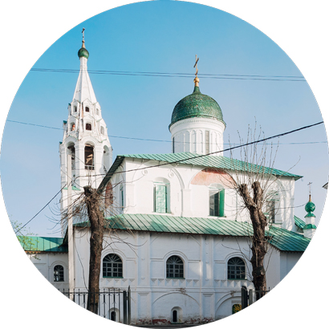

|  | |
| фотографии | план храма |
Изначально собор был пятиглавым, его поставили на месте деревянной церкви Благовещения. Как правило, храм, который ставился взамен существующего, наследовал престол и посвящение своего предшественника. Однако в данном случае это правило удалось обойти: во время строительства храма к волжскому берегу чудесным образом прибило икону Николая Мирликийского. Это дало повод обратиться с прошением об освящении главного престола вновь построенной церкви в честь Николы Чудотворца — первого помощника в купеческом деле и в далёких путешествиях: то в Сибирь за пушниной, то в Астрахань за икрой. Практически сразу церковь получила и неофициальное название в честь своего устроителя, под которым известна и поныне.
К сожалению, осмотреть здание снаружи теперь крайне трудно — оно окружено более поздними постройками, и некоторые точки зрения на него навсегда стали привилегией жителей соседних домов. Однако и теперь можно видеть роскошные архитектурные детали — например, узорный катушечный пояс, опоясывающий основной объём здания, а на восточной стене выходящий из галерей на фасад. Такой же декоративный мотив был использован в Покровском соборе на Красной площади в Москве и постройках начала XVII века в Спасском монастыре. Ещё одной особенностью внешнего украшения храма стали двойные круглые окошки вверху закомар, под их полуциркульным завершением. Этот мотив перекликается с декором Спасо-Преображенского собора. Как и большинство ярославских храмов, церковь Николы Надеина окружена крытой галереей, на восточных оконечностях которой устроены приделы — Благовещенский с севера и придел Александра Свирского с южной стороны (он был построен уже в конце XVII века), а также (в дьяконнике — правой части алтаря) придел Михаила Малеина — небесного покровителя первого царя династии Романовых, близость к которой стремился подчеркнуть Надея. Возведённая, как теперь бы сказали, частным инвестором (а в XVII веке это называлось словом «ктитор»), церковь была снабжена белокаменной резной летописью на посвятительных плитах белого камня, на которых можно прочесть даты начала (5 июня 1620) и окончания строительства (31 августа 1621), а также освящения (23 июня 1622) митрополитом Ростовским и Ярославским Варлаамом (все даты мы приводим в современном летоисчислении).
Сложная и имеющая свои особенности программа росписи храма, которая, к сожалению, не дошла до нас в полном объёме, также имела целью прославление новой царствующей фамилии и подчёркивала их кровные узы с Рюриковичами.
Несимметричный в плане храм Николы Надеина производит впечатление очень живого, словно вылепленного объёма, так как все его стены имеют небольшие отклонения от прямых линий и углов. Это придаёт памятнику не только обаяние, но и «вкус подлинности», неотделимый от понятий «на глазок», «с накидом» и других специфических терминов русского строительства.
Роспись интерьера церкви поражает размахом и скоростью исполнения: фрески основного храма и Благовещенского придела были выполнены за три месяца — с 5 июля по 5 октября 1640 года. Имена стахановцев-стенописцев сохранились тут же, на юго-западном столбе храма: костромич Иоаким Агеев сын Елепенков по прозвищу Любимо, нижегородец Иван Лазарев сын Муравей, ярославец Стефан Евфимиев сын Дьяконов, москвичи Иван Никитин, Борис Алексеев, Андрей Мартемьянов, Никифор Оульянов, Фёдор и Борис Тимофеевы, ярославцы Севастьян Дмитриев, Михайло Сидоров, Данило и Фёдор Оульяновы, костромичи Илья Данилов, Василий, Прокопий и Дмитрий Ильины дети Запокровские, Иван да Иван же Ивановы дети Поповы, Матвей Дементьев сын Бородин и другие. Большая, собранная в разных городах команда из двадцати опытных мастеров работала одновременно с разных сторон, чем и объясняется высокий темп работы. Такие артели художников были нарасхват, в частности, после окончания работ в Ярославле они поновляли росписи в Успенском соборе Московского Кремля; этот факт подтверждает, что заказ Надеи Светешникова исполняли лучшие мастера. К сожалению, в конце XIX века древние фрески были прописаны палехскими иконописцами. Только в последнее время реставраторы открывают древние росписи, программа которых имеет индивидуальные особенности: история Христа из подкупольного пространства перенесена в алтарную часть, а центральное место заняли сцены жития Николая Чудотворца, на западном своде вместо традиционного «Страшного суда» — композиция «Премудрость создала себе дом». В целом программа росписи посвящена идее Церкви как дома Божия на земле. Кроме фресок, здесь можно видеть редкий по своей сохранности барочный резной деревянный иконостас XVIII века, выполненный по рисунку основателя русского театра Фёдора Волкова. Именно потому, что этот иконостас находится в этой церкви, церковь некоторое время, с 1938 по 1959, была музеем Волкова. В царских вратах — центральной части иконостаса, похожих на декорацию, — можно видеть кажущиеся портретными лица апостолов, каждый из которых очень по‑театральному выражает определённую эмоцию.